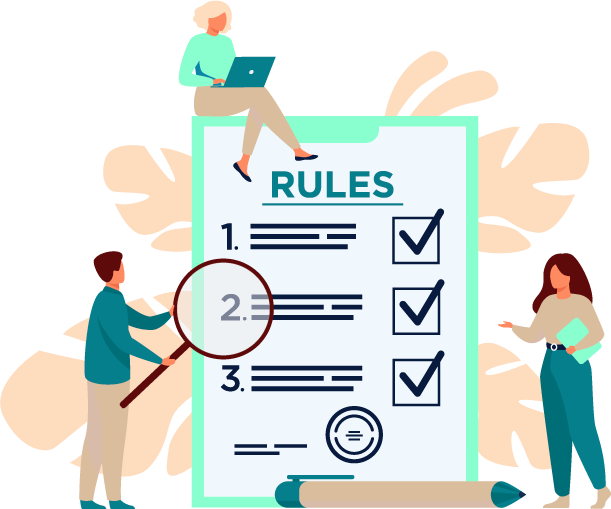

Competencias Específicas

LA VIOLENCIA
LA VIOLENCIA
Comprender el significado de la violencia y sus tipos a fin de establecer claridad sobre el uso de los términos y conceptos propios de la temática de estudio mediante el uso herramientas gráficas
IDENTIFICAR LAS CONSECUENCIAS
IDENTIFICAR LAS CONSECUENCIAS
Identificar las consecuencias de la violencia sexual para la prevención y atención a las víctimas mediante su representación en una herramienta gráfica.
Seleccione las tarjetas para ampliar los contenidos del curso.